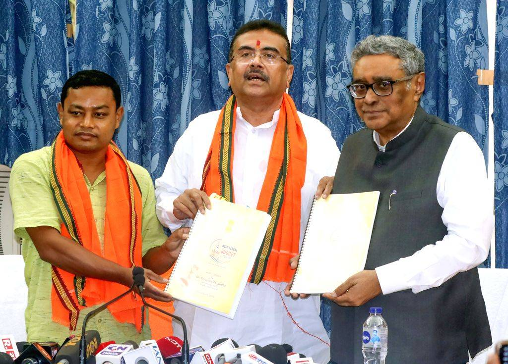
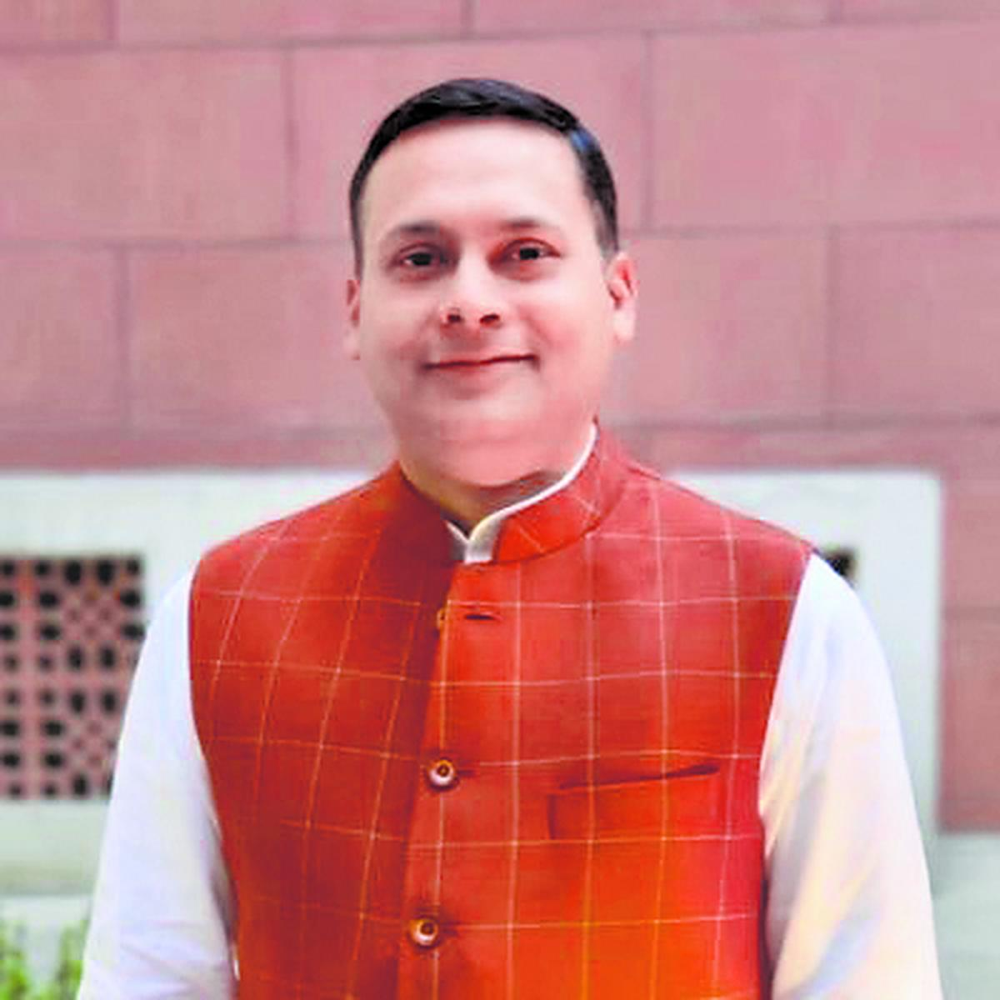

India's data centre buildout has, until recently, been a story about four cities — Mumbai, Chennai, Hyderabad, Bengaluru. Eastern India was structurally excluded, for a reason that had nothing to do with policy: every bit of international traffic leaving the region had to transit a landing station on the west or south coast. Latency and single-route dependency are not incentives problems. They are physics problems.
That specific constraint is now being addressed, and a cluster of state policy moves has arrived alongside it. For a developer assessing eastern India, the question is no longer whether West Bengal is trying. It plainly is. The question is which parts of the offer are contracted, which are announced, and which are exploratory.
The connectivity unlock is the substantive change
The Digha cable landing station in Purba Medinipur, implemented by Reliance Jio at an investment of over ₹1,000 crore, is the first in eastern India. State approval came in August 2020; in September 2024 the state's then principal chief advisor put the operational date at the first quarter of 2026 (delayed since), with initial capacity cited at around 9 Tbps and direct connectivity toward Singapore, Malaysia and Italy [1][2].
The strategic point is the removal of the Mumbai/Chennai routing dependency. For latency-sensitive workloads — and for any operator whose customers care about route diversity as a resilience matter, not just a speed one — that is the difference between eastern India being a viable primary site and being a disaster-recovery afterthought.
Announced capital is arriving
Larsen & Toubro is reported to be planning over ₹4,500 crore across West Bengal, spanning its software park at Bengal Silicon Valley in New Town — around ₹2,500 crore and some 25,000 jobs at full build — and a new Tier-III data centre in Kolkata, with L&T chairman S N Subrahmanyan expected to meet Chief Minister Suvendu Adhikari on the proposals [3][4].
Separately, CtrlS Datacenters earmarked around ₹2,200 crore for a campus at Bengal Silicon Valley on a five-acre plot, with a first building at 16 MW IT load and campus potential the company put at 60–100 MW [6]. That figure dates from 2024 and should be re-confirmed against current build status.
Adjacent industry investment is building in parallel: Mitsubishi Chemical Group has opened exploratory talks with the state on a semiconductor unit, with Durgapur and Panagarh cited as candidate sites, disclosed by the state industry minister after a Kolkata meeting [11]. It is early-stage interest under active interstate competition — the same delegation met Assam's Chief Minister the same week — not a committed plant, but it is a directional signal alongside the data centre pipeline.
The state's own track record here is the more useful datum: the 2021 data centre policy is credited with drawing 11 operators, and the 2020 broadband policy with roughly ₹7,500 crore of telecom investment [2]. That is a real base, not a standing start.
Policy framework aligned with ambitions
The 2026 state budget — the first delivered by the current BJP administration — announced a ₹5,000 crore investment promotion framework, a Global Capability Centre policy, a West Bengal Impact AI Mission, and a specific incentive package for AI-oriented data centres and hyperscale cloud infrastructure [7][8].

The AI Mission's published numbers are specific but modest relative to the ambition: a ₹40 crore incubation fund, a ₹60 crore venture capital fund, and a ₹50 crore science and technology talent fund, alongside a ₹26 crore IT park in Siliguri [13]. It sits alongside a parallel semiconductor push — a proposed unit in Durgapur, with stamp duty reimbursement, electricity duty waivers and flexible floor area ratio rules floated specifically for data centre developers [13]. Dasgupta has since repeated the framing outside the budget speech, telling an MCCI session in July that AI, quantum computing and data centres carry a multiplier effect the state "needs to aggressively get," and flagging power and water availability — with solar cited as a possible offset — as the binding constraint on that ambition [15].
Two subsequent signals matter more than the headline number. A comprehensive new industrial policy is slated for release by 15 August 2026, with a land-acquisition model under evaluation that would give landowners equity stakes in industrial projects [9]. And the incentive basis is being shifted from capital deployed to jobs created [10]. The AI Mission itself is one of a batch — alongside an investment promotion framework, an incentive policy and a startup policy — that Dasgupta told the Assembly would follow "before Durga Puja," meaning what exists today is a budget-speech commitment, not yet the operative policy text [14].

The political reception has been favourable. Amit Malviya, in-charge of the BJP's National IT & Technology Department and the party's West Bengal co-in-charge, publicly welcomed the budget as "a decisive break from the Trinamool model of governance," singling out the Global Capability Centre policy, the Impact AI Mission and the hyperscale data centre incentives as evidence the state is now positioning itself for next-generation industry [16]. That is a political endorsement of direction, not confirmation of any operational detail beyond what the budget text already sets out.
The risk that any credible assessment has to name
In 2025 the state administration introduced legislation revoking industrial incentives dating back to 1993, with companies reportedly owed in excess of ₹20,000 crore in accrued dues. The current administration has indicated a review, but the fiscal burden of clearing those liabilities remains unresolved [10].
For a developer, this is not a historical footnote — it is the central diligence question. An incentive framework's value is a function of the issuing government's demonstrated willingness to honour it across administrations. A state that has retroactively withdrawn incentives once has, by that act, repriced the risk attaching to every incentive it subsequently offers. The new framework may well be honoured in full. The point is that it cannot be assumed, and any financial model treating state incentives as contracted revenue rather than contingent upside is mispriced.
What we would want evidenced before committing
On connectivity: Digha's operational status and committed capacity.
On power: firm grid capacity and connection timelines at the actual parcel.
On land: whether Bengal Silicon Valley or a private parcel gives better programme control, and how any land-for-equity model interacts with either.
West Bengal's push is genuine and the connectivity unlock is structural rather than promotional. That combination is uncommon enough to be worth serious work. It is also early enough that the difference between a bankable position and an announced one is where the entire value sits.
Sources
- CableCommunity — Reliance Jio to set up West Bengal's first cable landing station. cablecommunity.com
- Communications Today — Submarine cable landing station in Digha by 2026. communicationstoday.co.in
- CXO DigitalPulse — L&T plans over ₹4,500 crore investment in West Bengal across IT and data centre projects. cxodigitalpulse.com
- SSMB — L&T plans ₹4,500 crore investment and data centre in Bengal. ssmb.in
- Whalesbook — L&T plans ₹2,500 crore data center investment in West Bengal. whalesbook.com
- Business Standard — CtrlS to invest ₹2,200 crore at upcoming data centre campus in Kolkata (June 2024). business-standard.com
- Business Standard — First BJP budget for Bengal focuses on growth, jobs and fiscal discipline. business-standard.com
- Kolkata Calling — Bengal Budget 2026: GCC policy, AI incentives & ₹5,000 crore investment push. kolkatacalling.com
- Whalesbook — West Bengal to unveil new industrial policy by August 15. whalesbook.com
- Whalesbook — West Bengal links industrial incentives to job creation. whalesbook.com
- Electronics For You — Mitsubishi Chemical explores semiconductor investment in West Bengal. electronicsforyou.biz
- Whalesbook — West Bengal Budget Unveils AI, Semiconductor Focus. whalesbook.com
- The Daily Pioneer — West Bengal govt to unveil new policies before Durga Puja, says finance minister. dailypioneer.com
- IBG News — West Bengal must aggressively attract high-tech industries to drive economic revival: Finance Minister Dr Swapan Dasgupta. ibgnews.com
- X (Amit Malviya) — post on the West Bengal Budget 2026–27, 22 June 2026. x.com/amitmalviya
This article is general commentary based on publicly reported information as at July 2026 and does not constitute an offer, solicitation, investment advice or a recommendation. Figures are as reported by the cited sources and have not been independently verified by Elementa. Where we have drawn an inference rather than reported a fact, this is marked in the text. Sources conflict on certain project specifications, and those conflicts are noted rather than resolved.